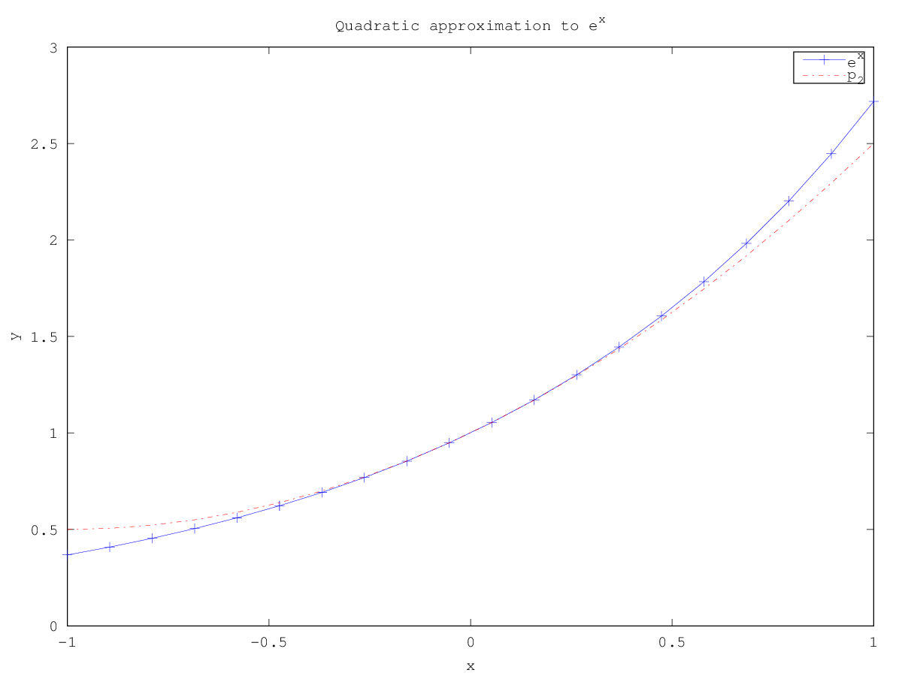
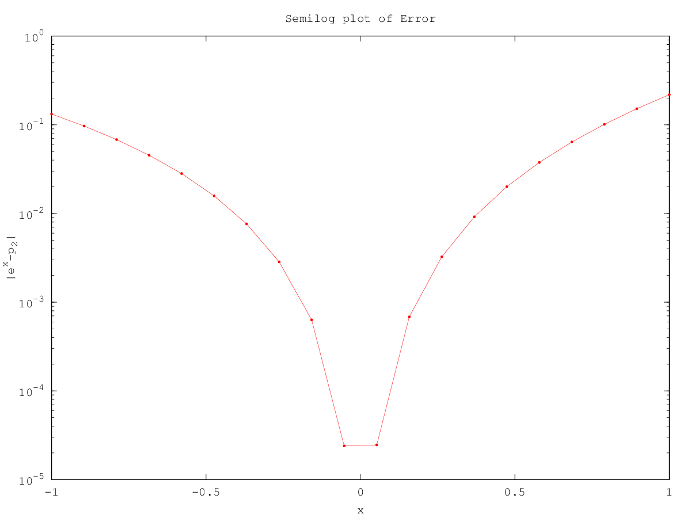

Your Name, email@address.com,HW 1
In this document I am illustrating how you might use html and
MathJax to type up your homework.
Problem 1. Taylor Theorem for \(f(x)=e^x\) in html:
First recall that
\[\frac{d^{i}f}{dx^i}=f^{(i)}(x)=e^x,\]
which is a consequence of the derivative of \(e^x\) being \(e^x\).
From Taylor's Theorem, we have
\[f(x)= e^x,\]
\[=\sum_{i=0}^\infty\frac{x^i}{i!}\tag{1}\]
\begin{equation}
=\sum_{i=0}^n\frac{x^i}{i!}+\frac{1}{n!}\int_0^xx^{n}e^tdt,\tag{2}
\end{equation}
\[\label{testlabel}
=\sum_{i=0}^n\frac{x^i}{i!}+\frac{x^{n+1}}{(n+1)!}e^{c_x}.\tag{3}\]
Let \(R(x)=\frac{x^{n+1}}{(n+1)!}e^{c_x}\) denote the derivative form of
the error in Taylor's Theorem applied to \(e^x\), the second term in
equation (\ref{testlabel}). For \(x\geq 0\) we have the following
bound
\[ 0\leq R(x) \leq \frac{x^{n+1}}{(n+1)!}e^{x}\leq\frac{x^{n+1}}{(n+1)!}3^{x},\]
Where we have used three as an upper bound for \(e\), and the quantity on the right can easily be computed provided we have a function for computing powers.
Plot of \(e^x\) and its degree two Taylor polynomial about \(x=0\).


Code for plot:
f=@(t)exp(t);
x=linspace(-1,1,20);
y=f(x);
clf
plot(x,y,'b-+');
hold on
%Taylor polynomial of degree 2 about x=0
p2=@(t)1+t+t.^2/2;
y2=p2(x);
plot(x,y2,'r-.')
%Note that the default size of a matlab figure is 8inx6in
title('Quadratic approximation to e^x')
legend('e^x','p_2')
xlabel('x')
ylabel('y')
print -dpng plot1.png
figure(2)
clf
semilogy(x,abs(y2-y),'r.-')
title('Semilog plot of Error')
xlabel('x')
ylabel('|e^x-p_2|')
print -dpng plot2.png
Table for data in the figures
x e^x p_2(x) |e^x-p_2(x)|
-1.0000000 0.3678794 0.5000000 0.1321206
-0.8947368 0.4087151 0.5055402 0.0968250
-0.7894737 0.4540837 0.5221607 0.0680769
-0.6842105 0.5044884 0.5498615 0.0453731
-0.5789474 0.5604880 0.5886427 0.0281546
-0.4736842 0.6227039 0.6385042 0.0158003
-0.3684211 0.6918258 0.6994460 0.0076202
-0.2631579 0.7686205 0.7714681 0.0028476
-0.1578947 0.8539397 0.8545706 0.0006310
-0.0526316 0.9487295 0.9487535 0.0000240
0.0526316 1.0540412 1.0540166 0.0000246
0.1578947 1.1710429 1.1703601 0.0006828
0.2631579 1.3010321 1.2977839 0.0032482
0.3684211 1.4454505 1.4362881 0.0091624
0.4736842 1.6058998 1.5858726 0.0200272
0.5789474 1.7841594 1.7465374 0.0376220
0.6842105 1.9822063 1.9182825 0.0639238
0.7894737 2.2022370 2.1011080 0.1011290
0.8947368 2.4466918 2.2950139 0.1516780
1.0000000 2.7182818 2.5000000 0.2182818
Code for generating table.
%Print header followed by table
fprintf('%10s %10s %10s %13s\n','x','e^x','p_2(x)','|e^x-p_2(x)|') ,for i=1:20
fprintf('%10.7f %10.7f %10.7f %13.7f\n',x(i),y(i),y2(i), abs(y(i)-y2(i)))
end
Problem 2 Much of what we do in this course generalizes to
large sets of data. For large data, it is more convenient to use of
matrix notation. (If you are interested in the numerical methods and analysis involving matrices, please sign up for MA 522 or MA 622.) A system of equations of the form
\begin{array}{cccc}
a_{11}x_1&+a_{12}x_2&+a_{13}x_3&=b_1,\\
a_{21}x_1&+a_{22}x_2&+a_{23}x_3&=b_2,\\
a_{31}x_1&+a_{32}x_2&+a_{33}x_3&= b_3,
\end{array}
Would be written as
\[Ax=b,\mbox{ where }\]
\[
A=\left[\begin{array}{ccc}
a_{11}& a_{12}&a_{13}\\
a_{21}& a_{22}&a_{23}\\
a_{31}& a_{32}&a_{33}\\
\end{array}\right],x=\left(\begin{array}{c}x_1\\x_2\\x_3\end{array}\right)\mbox{ and }
b=\left(\begin{array}{c}b_1\\b_2\\b_3\end{array}\right).
\]
{kind=link}
{kind=link}